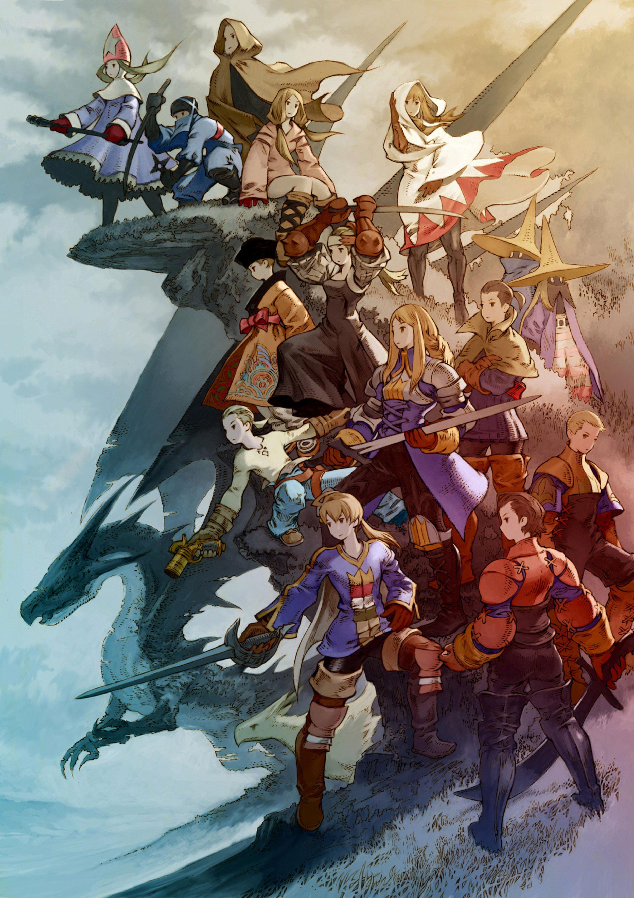
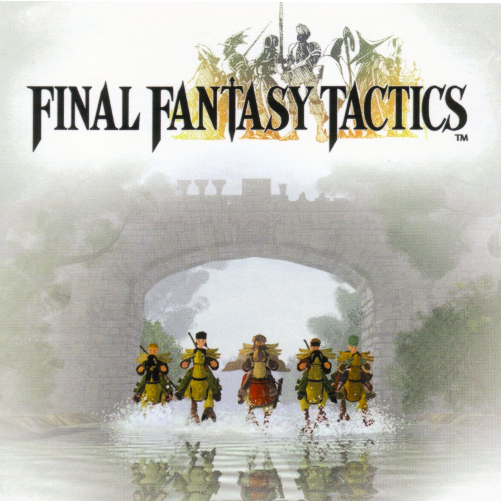
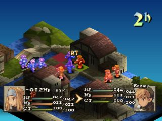
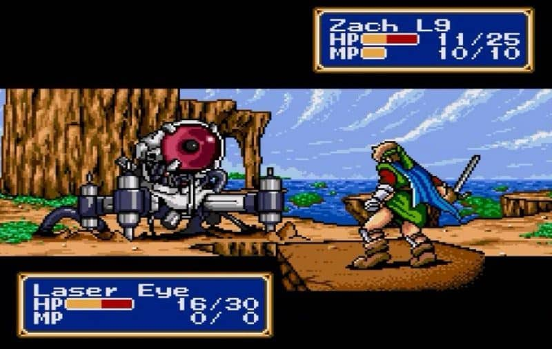
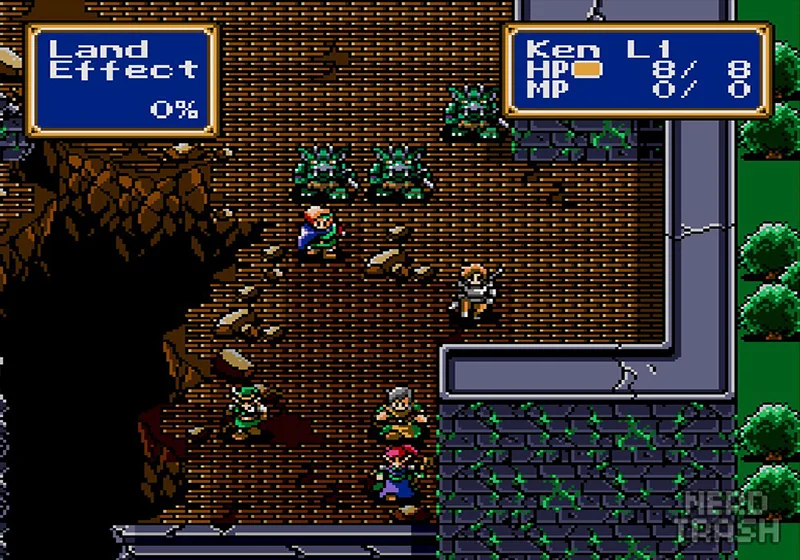
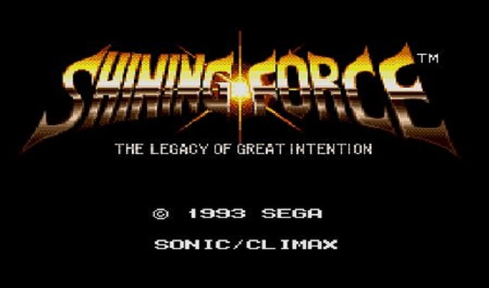

Final Fantasy Tactics



Final Fantasy Tactics é um jogo de RPG Tático, inicilamente lançado para Playstation 1, posteriormente tendo um remake lançado para PSP entitulado Final Fantasy Tactics - War of the Lions. Jogos de RPG Tático estão entre os que eu mais joguei ao longo de minha vida, mas esse certamente foi o que eu coloquei mais horas. A maior parte da minha infância e adolescência eu joguei esse título. O jogo possui uma história de intrigas medievais num mundo de fantasia com criaturas fantásticas e magia abundante. A história envolve desde as intrigas políticas entre nobres e plebeus até guerras entre grandes casas nobres, até que você se depara com um plano muito maior e sinistro que involve demônios e a igreja. No quesito jogabiidade, o jogo segue uma fórmula relativamente padrão para RPGs Táticos, porém com alguns sistemas únicos para sua época como o sistema de magias e habilidades baseadas em tempo de conjuração ao invés de conjuração imediata e o sistema de classes e habilidades que podem ser equipadas e combinadas entre diferentes classes. Um jogo de qualidade ímpar.
Shining Force



Shining Force: The Legacy of Great Intention é um RPG tático baseado em rodadas lançado em 1992 para o console de jogo Mega Drive/Genesis. Embora gire em torno de temas tradicionais do gênero fantasia, o jogo também aborda elementos da ficção científica. O jogo foi re-lançado múltiplas vezes: no Sega Smash Pack Volume 1 para Dreamcast, Sega Smash Pack Volume 2 para Windows, Sonic's Ultimate Genesis Collection para Xbox 360 e PlayStation 3,[3] e como um jogo avulso para Wii através do serviço Virtual Console e para Windows através do Steam. Em 2004, um remake foi lançado para Game Boy Advance com o título Shining Force: Resurrection of the Dark Dragon; em 2010, o jogo foi lançado para iOS. Eu pessoalmente tive o primeiro contato com o jogo através da versão para Windows, a qual eu joguei ainda criança num antigo computador que meu Pai tinha, esse jogo foi o maior motivador para que eu procurasse saber o significado de algumas palavras em inglês para tentar entender a história, por esse motivo eu vivia com um pequeno dicionário de inglês sempre que jogava, além de também perguntar a meu Pai.